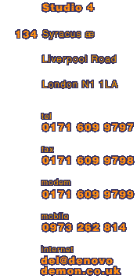
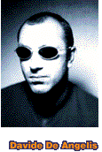
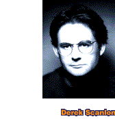

|
 |


DENOVO Davide De AngelisStudied Fine Art at Londons Goldsmiths College, following on to studyGraphic Design & Computer Technology at The London College of Printing. Derek ScanlonStudied Graphic Design And History of Art at Kingston School of Art.From the outset Denovo's agenda was to create a company which fused a highly creative attitude with the ability to incorporate the latest visual technologies. As part of the creative output of Denovo there have been a number of high profile and successful art exhibitions. These have been held in Japan and America as well as in most European countries. Denovo are now working with a number of high profile Artists and Musicians, as well as large technology companies. Our client list includes: David Bowie (& Isolar Inc, NY) Virgin (USA) BMG International Apple Computers Sony Granada TV Panasonic |